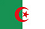

El partido mas esperado por el mundo futbolístico. Los dos equipos llegan con sus virtudes a este partido, Alemania goleando y Argentina definiendo por penales. Si argentina quiere ser el próximo campeón Messi debe demostrar porque es el mejor del mundo. Alemania tendrá que repetir el excelente partido que jugo en semifinales.
Prediccion: Campeón Alemania(1.66)

Un partido que nadie quiere jugar.Brasil necesita ganar el partido para despedirse de su mundial de la mejor manera posible.
Prediccion: Ganador o Empate Brasil(1.33)
Un partido con historia, son dos equipos que en este mundial han demostrado porque están en esta etapa. Argentina tiene un juego mas individualista con eje principal a Messi, mientras que Holanda tiene un juego más colectivo.
Prediccion: Ganador o Empate Holanda(1.55)
Es el partido mas esperado del mundial se puede decir una final anticipada. Brasil cuenta con dos bajas muy importante y Alemania tiene a todo su equipo disponible. Sera un partido de resultado incierto cualquiera de los dos equipos pueden acceder a la final.
Prediccion: Ganador o Empate Alemania(1.48)
Holanda es clara favorita frente a una Costa Rica que hizo un gran Mundial
Prediccion: Ganador Holanda(1.53)

Argentina es favorita por sus figuras pero Belgica tiene un gran plantel y no le va a regalar nada
Prediccion: Ganador o empate Argentina(1.22)
Colombia es la revelación del Mundial pero Brasil por ser local y por el plantel que va a tener que aparecer para lograr la clasificaión a semifinales
Prediccion: Ganador o empate Brasil(1.18)
Este partido es fundamental para Brasil si logra pasarlo seguramente llegue a la final. Colombia necesita confirmar todo lo bueno que esta haciendo en este mundial.
Prediccion: Ganador o empate Brasil(1.18)
Un clásico europeo donde solo sirve ganar. Alemania es un equipo mas compacto. A Francia le falta algo mas de juego colectivo. Pronostico incierto
Prediccion: Ganador o empate Alemania(1.44)
Se enfrentaran dos equipos que son parejos y ambos quieren pasar de a cuartos de final
Prediccion: Ganador o empate Belgica(1.25)

Partido donde argentina necesita mostrar que puede llegar a las finales. Suiza es un equpo que sabe a que juega y la planificación será fundamental para este partido.Messi deberá demostar que es el mejor del mundo.
Prediccion: Ganador o empate Argentina(1.12)

Amplio favorito los alemanes por equipo y plantel. Argelia cumplió pasando la primera ronda.
Prediccion: Ganador Alemania(1.33)

Un partido que en lo papeles no debería ser muy complicado para Francia. El cual demostró que tiene un muy buen equipo.
Prediccion: Ganador o empate Francia(1.083)
Alemania va a tener que demostrar hoy que es candidato al Mundial
Prediccion: Ganador Alemania(1.33)
Francia una de las mejores selecciones de la primera fase aparece como favorita ante Nigeria
Prediccion: Ganador Francia(1.40)

En el patido que aparece como más parejo Costa Rica fue una grata sorpresa en el mundial
Prediccion: Ganador o Empate Costa Rica(1.40)

Holanda fue una de las mejores selecciones de la primera fase y mexico se las va a ser difícil.
Prediccion: Ganador Holanda(1.25)
Un partido inesperado ya que Costa rica fue la sorpresa de este mundial y Grecia que había empezado mal el grupo se pudo clasificar en la ultima fecha.
Prediccion: Ganador o Empate Grecia(1.55)
Este partido se ve a Holanda una selección mas compacta y es una de las candidatas a estar entre las 4 mejores del mundial.
Prediccion: Ganador Holanda(2.15)

Llego la hora de demostrar por parte de Brasil si puede jugar con la presión de tener que salir a ganar el partido. Chile es un buen equipo e hizo una muy buena fase de grupo.
Prediccion: Ganador o Empate Brasil(1.12)
A los rusos solo le sirve ganar para clasificar. Argelia con un empate estaría clasificando
Prediccion: Ganador o Empate Rusia(1.25)
Partido que puede definir el primer lugar de Belgica en el grupo. Corea necesita ganar.
Prediccion: Ganador o Empate Belgica(1.20)
Partido que tiene levemente favorito a Alemania, pero EEUU es una selección que sabe a que juega.
Prediccion: Ganador Alemania(1.72)
Francia a pesar de ganar los dos primeros no esta clasificada y buscará la clasificación ante un difícil Ecuador
Prediccion: Ganador Francia(1.61)
Suiza fué cabeza de serie por algo y honduras no cumplió buenas actuaciones en la Copa
Prediccion: Ganador Suiza(1.44)
Amplio favorito Suiza. Honduras lamentablemente no pudo estar a la altura de la competencia.
Prediccion: Ganador Suiza(1.44)

Irán necesita ganar para hacer historia. Partido de difícil pronostico
Prediccion: Empate o Ganador Bosnia(1.30)
Argentina es siempre candidata además del plantel tiene a Messi que hace la diferencia
Prediccion: Ganador Argentina(1.44)
Partido para confirmar que tan legos puede llegar argentina.
Prediccion: Empate o Ganador Argentina(1.071)
Los africanos necesitan ganar para clasificar. Grecia no se juega gana.
Prediccion: Ganador Costa de Marfil(2.00)
En este partido Colombia no se juega gana ya que esta clasificado y casi primero. Japon necesita ganar y esperar.
Prediccion: Ganador o Empate Japón(1.80)
Ultimo partido para varios jugadores de Inglaterra y por supuesto que no se puede sin ganar este ultimo partido. Costa Rica ya esta clasificado.
Prediccion: Ganador Inglaterra(1.80)
Partido de difícil pronostico.
Prediccion: Empate o Ganador Croacia(1.48)
Favorito amplio Brasil. Un partido de despedida para Camerún.
Prediccion: Ganador Brasil(1.16)
Este partido definirá el primer y segundo lugar.
Prediccion: Empate o Ganador Holanda(1.48)
Ultimo partido para la generación que tanto le dio a España.Por eso no se queraran volver sin un triunfo
Prediccion: Ganador España(1.44)
Alemania firme candidata es mas que una Ghana que no va a ser facil
Prediccion: Ganador Alemania (1.33)
Argentina es claro favorito contra Iran por historia, presente y plantel.
Prediccion: Ganador Argentina (1.14)
Por la imagen muy pobre de Honduras y el plantel mas rico me inclino por Ecuador.
Prediccion: Ganador Ecuador (1.66)
Un partido muy parejo me inclino por Francia.
Prediccion: Ganador Francia (1.90)
Los dos equipos están obligados a ganar. Por plantel y figuras el favorito es Ecuador.
Prediccion: Ganador Ecuador (1.66)
Partido muy parejo. Los dos equipos ganaron en su presentación. Hoy el que gane ya puede dar un gran paso hacia la clasificación.
Prediccion: Empate o Ganador Francia (1.20)
Partido fundamental para el grupo. Los dos equipos ganaron en la primera fecha. Italia por historia es favorito.
Prediccion: Ganador Italia (1.80)
Cualquiera de los dos equipos necesita ganar. Grecia necesita además cambiar la pobre imagen que dejo en su primer partido
Prediccion: Empate o Ganador Japon (1.30)

Es una final para los dos equipos. Se puede ver un leve favoritismo hacia Inglaterra
Prediccion: Empate o Ganador Inglaterra (1.28)
Es un partido parejo ya que ambos equipos ganaron en su primera fecha. Partido de pronostico incierto
Prediccion: Empate o Ganador Costa De Marfil (1.75)
Es una final para los dos equipos el que pierda queda eliminado.
Prediccion: Ganador o empate Croacia (1.18)
España no puede volver a cometer todos los errores del primer partido por eso y el respeto al campeon del mundo voy por ellos.
Prediccion: Ganador España (1.57)
Es un partido difícil para los dos si gana Chile su rival quedara eliminado del mundial. España esta obligado a ganar
Prediccion: Empate o Ganador España (1.12)
Si Holanda puede volver a jugar parecido a lo del primer partido es amplio favorito. Hoy mismo puede dar su clasificación.
Prediccion: Ganador Holanda (1.22)
Gana Rusia en un partido dificil y cerrado pero hay un leve favoritisto para los europeos
Prediccion: Ganador Rusia (1.85)
Brasil con todas sus estrellas y todo a favor hoy contra mexico gana
Prediccion: Ganador Brasil (1.36)
En el dia de hoy Brasil con un triunfo podría casi sellar su pasaje a la siguiente fase del mundial
Prediccion: Ganador Brasil (1.36)
Amplio favorito es Bélgica ya que cuanta con varios jugadores jugando en las principales ligas de europa. Cuenta con el goleador Lukaku.
Prediccion: Ganador Belgica (1.36)
Belgica aparece como la posible revelacion del mundial con las figuras Hazard, Company,Courtois, De Bruine son favoritos ante argelia
Prediccion: Ganador Belgica (1.36)
SI los africanos quieren volver a ser sensación del mundial necesitan ganar en el debut. Por su parte USA sin su jugador histórico Donovan esta buscando un recambio. De todos modos los africanos son superiores y lo deben demostrar en el campo de juego.
Prediccion: Ganador Ghana (2.45)
En este partido solo se puede esperar un triunfo de los nigerianos. Ya que los iraníes están varios escalones por detrás.
Prediccion: Ganador Nigeria (1.90)
Partido muy parejo ya que los dos equipos empiezan el camino mundialista. Para destacar el plantel alemán es mucho mas amplio en técnica que el Protugues. Recordando que este tiene que ser el mundial de CR7 ya que por edad y por momento. Lo necesita para consolidar su muy buen año con el Real Madrid.
Prediccion: Ganador o Empate Alemania (1.28)
Con mucho publico a favor Argentina y con sus estrellas Messi,Aguero, Di Maria, Higuain es favorita.
Prediccion: Ganador Argentina (1.40)
Francia aparece como favorito para ganar el grupo y honduras es la mas debil del grupo. Gana Francia
Prediccion: Ganador Francia (1.33)
Este partido se podra ver el verdadero poderío del tridente argentino. EL ultimo año de Messi no fue bueno en el barcelona, pero simpre puede aparecer su magia.
Prediccion: Ganador Argentina (1.40)
Claro favorito Francia por plantel. Aunque no cuente con Ribery para este mundial
Prediccion: Ganador Francia (1.33)
Partido dificil para imaginar. Se ve un pequeño favoritismo a ecuador. Pensando en la temperatura que habra en el estadio.
Prediccion: Ganador o empate Ecuador (1.55)
Un partido de resultado incierto. Por plantel el de Costa de Marfil es algo superior. Debido al muy buen momento que estan pasando YAYA TOURE y GERVINHO, por supuesto que teniendo a DROGBA para entrar en cualquier momento.
Prediccion: Ganador Costa de Marfil (2.60)
Como todo primer partido de grupo se genera una incertidumbre. En este caso Uruguay es el amplio favorito para ganar el partido. Se puede resaltar la ausencia de Suarez pero el resto del equipo tiene un nivel superior a Costa Rica.
Prediccion: Ganador Uruguay (1.44)
A pesar de la falta de Falcao, Colombia es levemente favorito. Por su parte Grecia tiene un juego muy físico pero algo lento en los últimos metros de la cancha.
Prediccion: Ganador o empate Colombia (1.30)
España con 16 jugadores del plantel campeon del 2010 tiene un partido dificil se enfrenta a una holanda renovada pero igual es favorita en un partido clave para el grupo.
Prediccion: Ganador o empate España (1.16)
Mexico tiene un leve favoritismo en su debut contra Camerún, a priori el rival más débil del grupo. El veterano Rafa Márquez aporta la experiencia y Andrés Guardado la calidad en medio campo, mientras que Giovani dos Santos, Oribe Peralta y Javier 'Chicharito' Hernández se rifan dos puestos en la delantera, ademas en Camerun sufrio la baja del delantero Pierre Webo.
Prediccion: Ganador o empate Mexico (1.28)
Chile es favorito en este partido debut. Cuenta en su delantera con Alexis Sanchez y Vargas, dos claras cartas de gol. Pese a estar en duda su gran mediocampsita Vidal, no deja de presentarse como claro candidato a llevarse los 3 puntos
Prediccion: Ganador Chile (1.40)
Croacia no podra contar con su goleador Mario Mandzukic estrella del Bayern de Munich por estar suspendido. Brasil se presentara en inigualable condición de favorito, por historia, localia y potencial, tal como lo marcan las casas de apuestas, que pagan 1.05 la doble oportunidad y 1.33 ganador
Prediccion: Ganador Brasil (1.33)